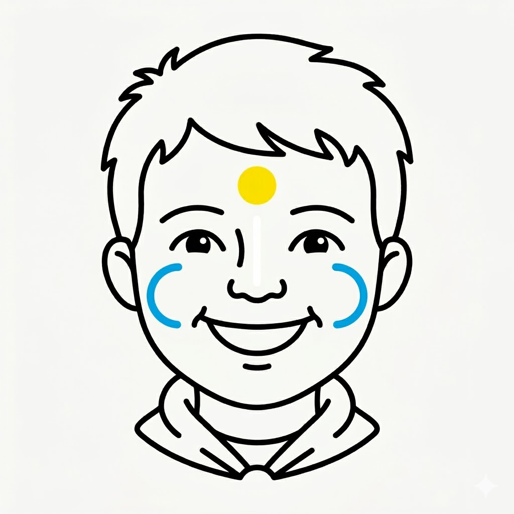

The Speaker's Guide
Narrator: Lions, you have spent this year exploring the world with curious eyes and a brave roar. You have learned what it means to be part of a pride—supporting one another and having fun together.
As you prepare to cross the bridge and become Tigers, we mark your milestones.
First, we place a yellow dot on your forehead. This represents the bright sun that shone on your adventures this year, reminding you to always bring warmth and light to your den.
Next, we draw a white line down your nose. This stands for the purity of your spirit and the simple honesty you carry into everything you do.
Finally, we place blue arcs upon your cheeks. These represent the blue of the sky and the strength of the Pack that will always surround you.
Lions, you are ready. Turn and face your future!

The Painter's Reference